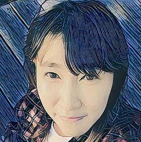
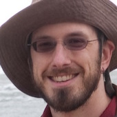
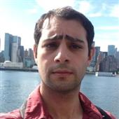

People
Director

Prof. Andrew McCallum
Students


Haw-Shiuan (Ken) Chang
PhD, started 2015

Dung Thai
PhD, started 2016
Xiang Li (Lorraine)
PhD, started 2016
Post Docs
Staff

David Soergel
Software Engineer
Alumni

Alexander G. Ororbia II
Visiting Scholar, Summer 2015, PhD Student at Pennsylvania State University
Klim Zaporojets
MS 2015
Karl Schultz
On leave
Jinho Choi
Postdoc 2012-2014, now Assistant Professor, Computer Science, Emory University
Sameer Singh
PhD 2014, now postdoc with Carlos Guestrin, University of Washington
Alexandre Passos
PhD 2013, now at Google

Sam Anzaroot
MS 2013, now at Dataminr
Sameer Singh
PhD 2014, now postdoc with Carlos Guestrin, University of Washington
Sameer Singh
PhD 2014, now postdoc with Carlos Guestrin, University of Washington
Sameer Singh
PhD 2014, now postdoc with Carlos Guestrin, University of Washington
Sameer Singh
PhD 2014, now postdoc with Carlos Guestrin, University of Washington